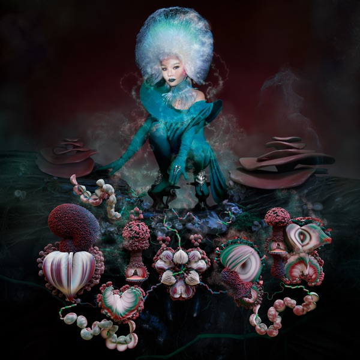
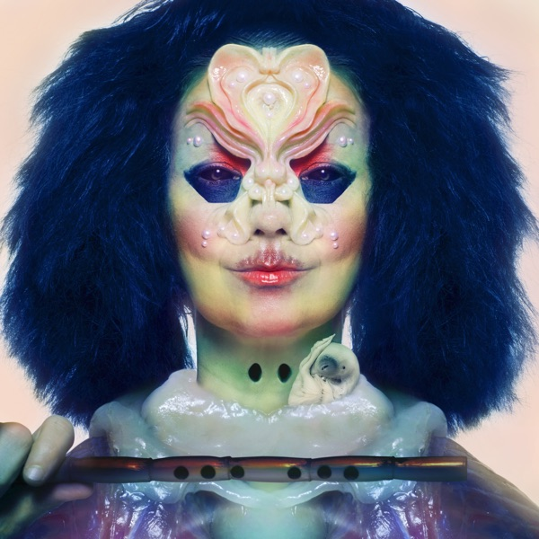
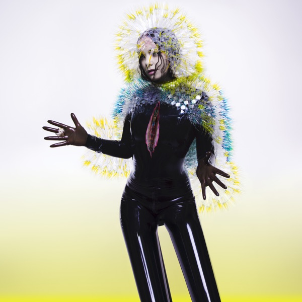
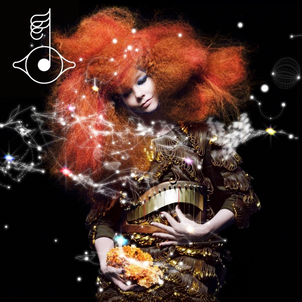
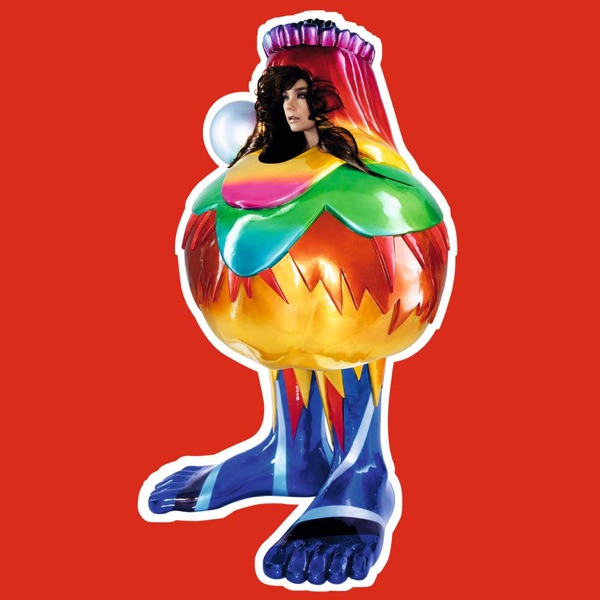
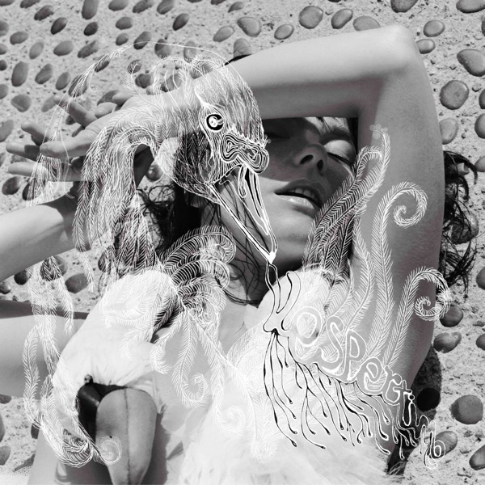
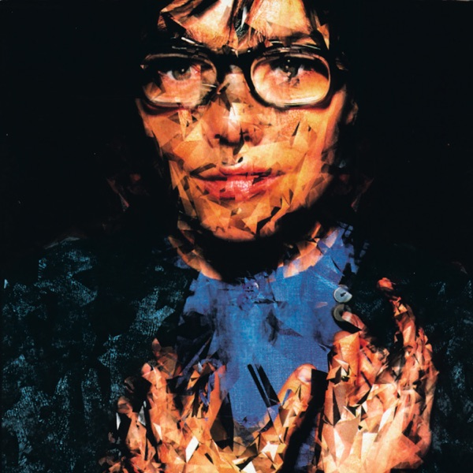
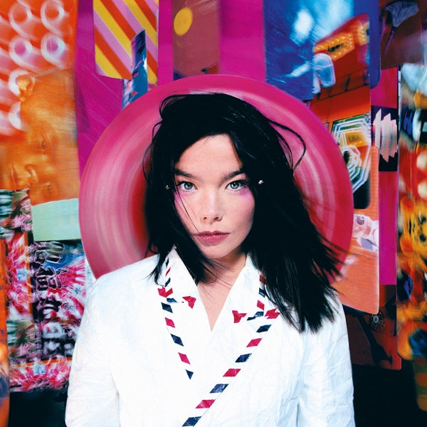
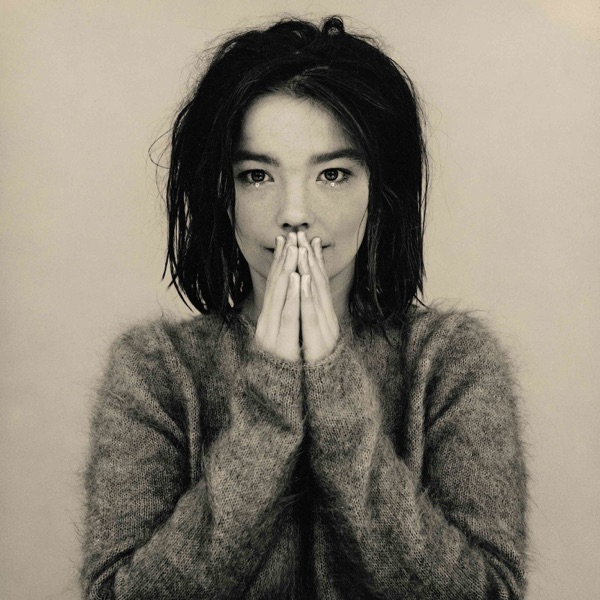

Fossora
Vinil duplo do álbum de 2022, com clarinetes graves e batidas gabber.
R$ 259,00Vinis da Björk.

Vinil duplo do álbum de 2022, com clarinetes graves e batidas gabber.
R$ 259,00
Vinil duplo do álbum de 2017, com flautas e cantos de pássaros.
R$ 249,00
Vinil duplo do álbum de 2015, com "Stonemilker" e "Lionsong".
R$ 229,00
Vinil duplo do álbum de 2011, o primeiro lançado como app.
R$ 229,00
Vinil duplo do álbum de 2007, com "Earth Intruders" e "Declare Independence".
R$ 219,00
Vinil duplo do álbum de 2001, com "Hidden Place" e "Pagan Poetry".
R$ 219,00
Vinil da trilha sonora de 2000 do filme "Dançando no Escuro", com "I've Seen It All".
R$ 199,00Vinil do álbum de 1997, com "Jóga" e "Bachelorette".
R$ 199,00
Vinil do álbum de 1995, com "Army of Me" e "Hyperballad".
R$ 199,00
Vinil do álbum de estreia solo, de 1993, com "Human Behaviour".
R$ 189,00